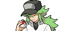
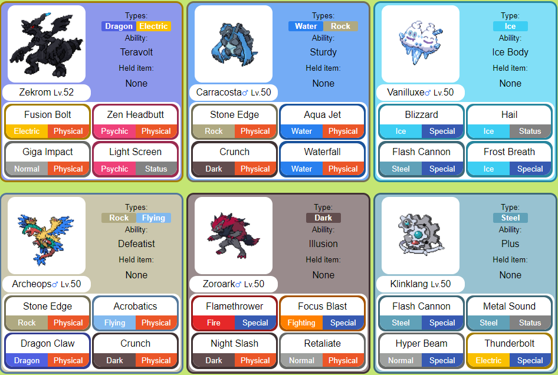
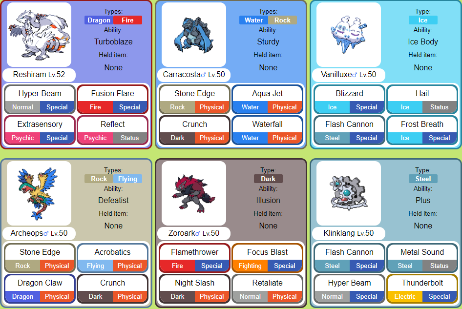
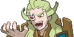
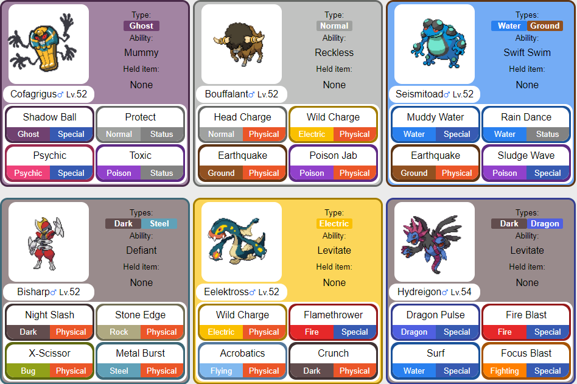
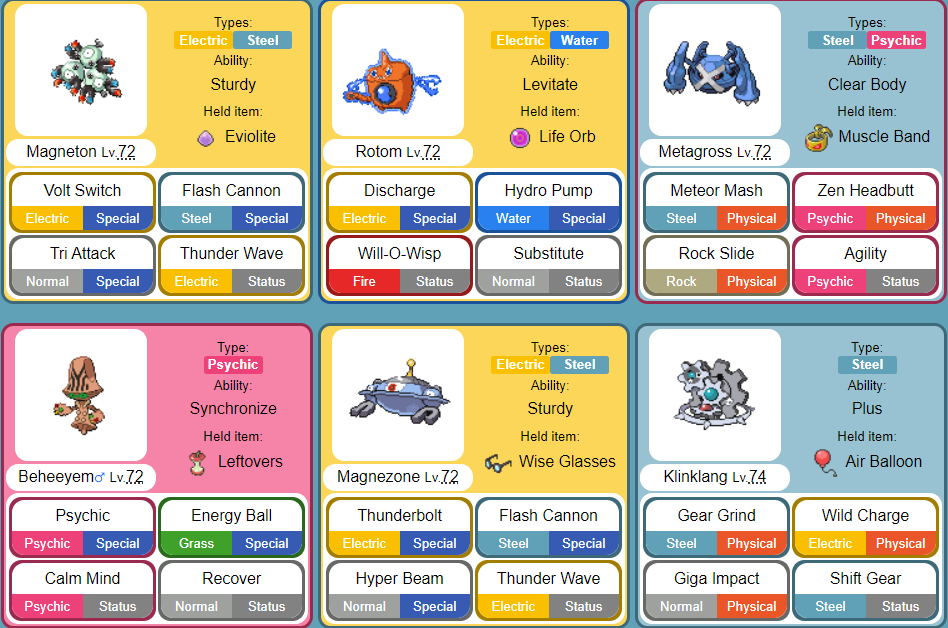

They are a villainous team from the Pokemon Black and White & Black 2 and White 2 games, with their organization based in the Unova region. Team Plasma's original goal was to "liberate" all Pokémon from their Trainers, by either manipulating the Trainer to release their Pokémon, or by theft., Team Plasma's true leader, exploited the group in an attempt to rule Unova as the only one with Pokémon. Two years after Team Plasma's defeat, the group returned with a new goal to rule Unova by freezing it using Kyurem. A small group from the original Team Plasma was still loyal to N, and took it upon themselves to take care of weakened Pokémon in the wild.
| Characters | Roles | Personality/Story | Main Teams |
|---|---|---|---|
| Natural Harmonia Gropius (N)  |
King | The puppet leader of Team Plasma, and aspires to create separate worlds for humans and Pokémon. He was raised by Pokemon before he was adopted by Ghetsis.N was gifted with the ability to speak with and understand Pokemon |
  |
| Ghetsis Harmonia Gropius  |
Mastermind | One of the Seven Sages and the true mastermind behind Team Plasma. |  |
| Colress |
Acting Leader | A Pokémon researcher and the second boss of Team Plasma, appointed by Ghetsis. His goal is to discover the true way to draw out the strength of Pokémon |
 |